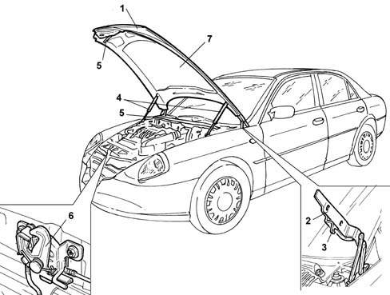
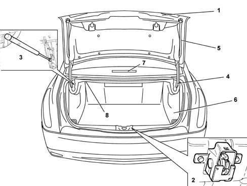
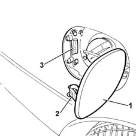

COMPARTMENT LIDS
- Path
- Descriptions > 70 FITTINGS > 7025 COMPARTMENT LIDS > COMPARTMENT LIDS
- Kind
- system description
- Applies to
- all engines; all production periods
- Interactive page
- https://sloeber94.github.io/elrnDB-lThss/en/#/841005796
Applies to: all engines; all production periods
SPECIFICATIONS
There are three lids on the vehicle, the bonnet lid, the boot lid and the fuel filler flap.
The bonnet lid and the boot lid are made from an outer covering assembled on a support frame. Layers of sealant are applied between the covering and the frame which, in addition to limiting vibrations also increase the strength of the assembly.
The fuel filler flap is made of plastic which is matched to the colour of the bodywork.
Bonnet lid
The bonnet lid, completely covered in a sound insulation material, is supported when it is open by two gas springs. There is a single central locking unit for its control and locking.
The control system is a bowden cable.
The bonnet lid has a frame with pre-established collapse lines; this safety feature prevents the lid from going through the windscreen in the case of an impact.

- 1 - Bonnet lid
- 2 - Lid hinges
- 3 - Retaining hook
- 4 - Telescopic struts
- 5 - Wind seals
- 6 - Lid lock
- 7 - Sound insulation lining
Boot lid
The boot lid is entirely lined with a sound insulation material and is supported by telescopic struts with gas springs.
The rear section (no. plate holder) houses the rear light clusters for the reversing lights and rear fog lamps, the electric handle and the key lock.
The boot is opened:
- using the key directly in the lock which makes it possible to release the boot lid by turning the mechanical insert in a clockwise direction (with the battery run down);
- using the button in the tunnel cover console which operates the lock electrically;
- using the electric handle (micro);
- using the remote control.
For further details see NVB
(See assembly ) 5505A multi-function components

- 1 - Rear tailgate
- 2 - Tailgate lock
- 3 - Telescopic strut
- 4 - Tailgate hinges
- 5 - Upper inner lining
- 6 - Side / lower lining
- 7 - Third brake light
- 8 - Inner rear lamp
Fuel filler flap

- 1 - Fuel filler flap
- 2 - Hook
- 3 - Flap retaining lock
The fuel filler flap is made of plastic which is matched to the colour of the bodywork.
The flap is opened depending on the state of the driver's door:
- driver's door locked - flap locked;
- driver's door unlocked - flap unlocked.
It is also possible to open the flap, in emergencies, using a cable located in the luggage compartment on the right hand side.